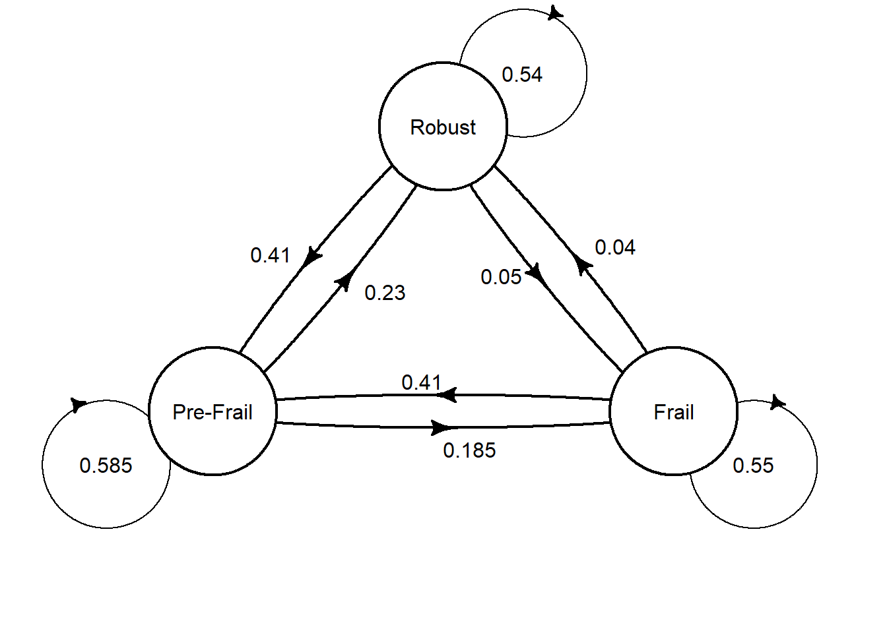
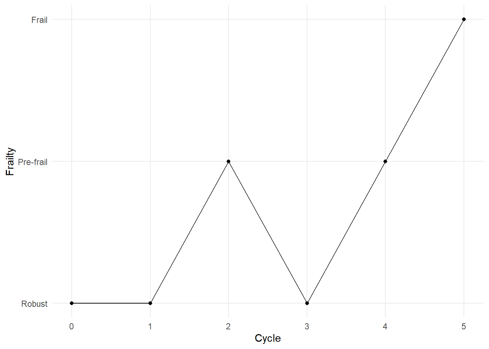

Frailty Transition: Forecasting using Markov Chain Simulation
This post presents the implementation of Markov chains in R programming language to simulate transition of frailty states.
Statistics
Ageing
Author
Nien Xiang Tou
Published
December 22, 2023
Frailty is an ageing-related syndrome that is often associated with adverse health outcomes. It is dynamic in which one can improve or decline across three different frailty states. This blog post shows how we can use Markov chains in simulating transitions between these frailty states to give us an estimate on the progression of frailty in a population within a specific time period.
Image generated using artificial intelligence via Canva.
Frailty
We often hear older adults being described as frail while their functional abilities decline with age. According to the Oxford dictionary, frail is defined as being physically weak. Arguably, this reflects the phenomenon of ageing quite accurately, in which muscular mass, physical performance and ability to perform activities of daily living deteriorates. While the term frail has existed for a long time, the clinical concept of frailty was only first proposed about two decades ago. Linda Fried conceptualized frailty as a decline in physiological reserves and increased vulnerability to stressors (Fried et al. 2001). While there is no gold-standard measurement of frailty presently, it is widely accepted that there are three states of frailty status: robust, pre-frail and frail. According to Linda Fried, frailty is a phenotype that can be characterized based on five criteria namely unintentional weight loss, muscle weakness, slow walking speed, exhaustion and low physical activity. Presence of three or more components is considered as frail, while those with one or two components are pre-frail, and those without any components are classified as robust.
The nature of frailty is dynamic, and the progression of this geriatric syndrome varies from individual to individual. Importantly, it is not an irreversible one-way path leading to disability or death, and one can improve his or her frailty status with the right interventions.
Markov Chains
Markov chains, named after Russian mathematician Andrey Andreyevich Markov, are state-transition models to illustrate the transition between mutually exclusive states in a stochastic manner. The hallmark of markov chains is its memoryless trait, also referred as the Markov property, which implies that the future state of a system depends only on its current state. The probability of transitioning from one state to another is independent of its history.
Note
A key assumption of Markov chains is that it is ‘memoryless’! This means that the probability of transitioning from one state to another depends solely on the current state, and not on the sequence of events that preceded it.
Markov chains are appropriate to model systems with probabilistic state transitions and have several useful applications such as weather forecasting. Thus, since frailty states are transitive, markov chains could be applied to forecast the progression of frailty. This blog post employs a discrete-time markov chain to examine the transition between frailty states across a stipulated number of cycles.
Transition Matrix
The probabilities of transitioning between different states in Markov chains are specified in a square matrix termed the transition matrix. It is also called the stochastic matrix, probability matrix or Markov matrix. Since the values denote probabilities, they range between 0 and 1.
Table 1: Transition matrix of frailty states
To:
Robust
Pre-Frail
Frail
From:
Robust
0.54
0.41
0.05
Pre-Frail
0.23
0.585
0.185
Frail
0.04
0.41
0.55
Table 1 above shows the transition matrix of frailty states. Each of the three frailty states are listed in the rows and columns. The values represent the probabilities of transitioning between respective states based on the pooled estimates from a systematic review and meta-analysis (Kojima et al. 2019). Each row of probabilities sums up to 1 to represent all possible transition states. For example, the first row represents transition from a robust state, in which there is a 54% chance of remaining robust, 41% chance of progressing to pre-frail, and 5% chance of declining to being frail.
Code
library(heemod)# Defining transition matrixmat_dim <-define_transition(state_names =c('Robust', 'Pre-Frail', 'Frail'), .54, .41, .05, .23, .585, .185, .04, .41, .55)# Specifying the curvature of the arrows in a matrixcurves <-matrix(nrow =3, ncol =3, 0.05)# Plotting of the transition matrixplot(mat_dim,box.size =0.12,curve=curves, self.shiftx =c(0.15,-0.2,0.15), self.shifty =c(-0.1,-0.1,0.1), self.arrpos =c(1.3,1.9,1.2))

We may also visualise the transition matrix in a path diagram. First, we specify the transition matrix using the define_transition function from the heemod package. Then, we can simply use base R to plot the specified transition matrix, which is plotted using curved arrows. You may also specify the curvature of the arrows using a matrix. Unfold the code above to see the full code for producing the path diagram above.
Research Question
Assuming that we have 1000 robust older adults at baseline, and given the probabilities of transitioning between frailty states as specified in the transition matrix above, what would be the proportion of them in each of the frailty states in 20 years time?
Monte Carlo Simulation
In this blog post, discrete-time Markov chains were employed to model the transitions between frailty states using the transition matrix above to forecast the distribution of frailty states in a certain time period. Please note that we make two assumptions. First, as time is treated as a discrete variable, it is considered in counts of specified periods. In this case, as the probabilities above are derived from a mean follow-up of 3.9 years (Kojima et al. 2019), we assume each cycle length as a 4-year period. Second, we make a strong assumption that the probabilities do not vary with time. This means that regardless of the number of cycles, the probability of transitioning between frailty states remains the same.
Let’s first try simulating a Markov chain using a Monte Carlo simulation approach to answer our hypothetical research question above. The transition among frailty states at individual level was simulated by creating a function that takes three arguments: 1) the initial starting state, 2) the transition matrix that specifies the probabilities of transitioning between states, and 3) number of cycle lengths. It utilises a for-loop to simulate the progression of one’s frailty state across the specified cycle lengths. In each cycle length, the transition was determined in a stochastic manner that corresponds to the probabilities specified in the transition matrix. Credits to Etienne Pienaar for sharing the codes to create such function in his video tutorial.
# Write a function for markov chain simulationMC_simulate <-function(initial_state, transition_matrix, cycle_length){# integers to denote respective frailty states# 1 = Robust, 2 = Pre-frail, 3 = Frail U =1:3# Create an empty list that corresponds to cycle length plus 1 to account for baseline state X =rep(NA, cycle_length+1)# Specify first value in the list as the initial state X[1] = initial_statefor (i in1:cycle_length){ X[i+1] =sample(U,1,prob = transition_matrix[X[i],]) }return(list(Frailty = X, Cycle =0:cycle_length))}
Next, we would need to specify the transition matrix accordingly.
The code below simulates the Markov chain for one robust individual for 5 cycle lengths, and the resultant dataframe shows the frailty states for each cycle. The frailty states are denoted in integers in which 1 refers to robust, 2 represents pre-frail and 3 corresponds to frail.
# Set seed for reproducibilityset.seed(1234)# Save the results for simulationsim_res <-MC_simulate(1,Transition_matrix,5)# Convert to dataframeres_df <-data.frame(sim_res)res_df
Frailty Cycle
1 1 0
2 1 1
3 2 2
4 1 3
5 2 4
6 3 5
The figure below visualises the simulation result, which probably helps you to better understand the transitions between states across the five cycle lengths. As seen in the graph, for this particular simulation, the individual remained robust at the first cycle, declined to pre-frail at the second cycle, improved to robust at the third cycle before progressing to pre-frail and subsequently frail in the next two cycles.

The example above is a simulation for one individual. Not all robust individuals would necessarily end up as frail at the end of the fifth cycle. To answer our hypothetical research question above, we would need to perform the simulation for 1000 individuals. In order to do this, we would need the help of for-loop once again as presented in the code below.
# Create a empty dataframe to store the resultscollated_sim_res <-data.frame()# Set seed for reproducibilityset.seed(1234)# Simulation for 1000 individualsfor (i in1:1000){ sim_res <-MC_simulate(1,Transition_matrix,5) res_df <-data.frame(sim_res)# To differentiate between different individuals res_df$Group <-c(rep(i, 6)) collated_sim_res <-rbind(collated_sim_res, res_df)}# View numbers for each respective state at the end of fifth cyclecollated_sim_res|>filter(Cycle ==5)|>group_by(Frailty)|>count()
The output above shows us the number of individuals for each respective frailty state at the end of the fifth cycle. Among the 1000 individuals, the results indicate that approximately 50% of them would end up in the pre-frail stage, 30% remains robust and 20% become frail.
Given the randomness of such simulations, it is expected that these proportion estimates have some variance. We may quantify such variance by repeating these simulations to determine the distribution of the proportion estimates. I performed the same simulation of 1000 individuals for 100 times, and the table below shows some summary statistics to help us better infer the proportion estimates at the end of the fifth cycle. You may unfold the code below that ran this repeated simulation.
Code
# Create empty dataframe to store resultsdf <-data.frame(Robust =rep(NA, 100),Prefrail =rep(NA, 100),Frail =rep(NA, 100))# Set seed for reproducibilityset.seed(1234)# Simulation of 100 trials with each trial simulation of 1000 individualsfor (u in1:100){ collated_sim_res <-data.frame()for (i in1:1000){ sim_res <-MC_simulate(1,Transition_matrix,5) res_df <-data.frame(sim_res) res_df$Group <-c(rep(i, 6)) collated_sim_res <-rbind(collated_sim_res, res_df) } sim_df<-collated_sim_res|>filter(Cycle ==5)|>group_by(Frailty)|>count()# Proportion of robust x = sim_df[1,2]/1000*100# Proportion of pre-frail y = sim_df[2,2]/1000*100# Proportion of frail z = sim_df[3,2]/1000*100# Appending the results to the dataframe df[u,1] <- x df[u,2] <- y df[u,3] <- z}
Frailty
Mean
Minimum
Maximum
95% CI lower bound
95% CI upper bound
Frail
22.069
18.9
24.9
21.79360
22.34440
Prefrail
49.532
46.3
54.1
49.19527
49.86873
Robust
28.399
25.0
32.5
28.11013
28.68787
Importantly, these summary statistics help us to quantify the uncertainty around our estimates, which better aids decision making. For example, the 95% confidence intervals (CI) tell us the plausible range of values for the true proportion estimates. The minimum and maximum values can give us a sense of the ‘worst’ and ‘best’ case scenarios in our forecast. Collectively, these results suggest that among 1000 robust older adults, 28.1% - 28.7% of them would likely remain robust; 21.8% - 22.3% would become frail; and majority of them (49.2% - 49.9%) would likely decline to pre-frail in 20 years time.
Markov Chain Cohort Simulation
While the Monte Carlo simulation approach is certainly useful in modelling probabilistic events, the simulation of random sampling at individuals’ level for large sample size is computationally intensive. Alternatively, we may simulate a Markov chain using a cohort model instead. As the name suggests, we estimate the transition between states at a cohort level instead. This method simulates each cycle length by simply performing a matrix multiplication.
# Specify transition matrixtransition_matrix =matrix(c(0.54,0.41,0.05,0.23,0.585,0.185,0.04,0.41,0.55),nrow =3, ncol =3,byrow =TRUE, dimnames =list(from =c('Robust', 'Pre-Frail', 'Frail'),to =c('Robust', 'Pre-Frail', 'Frail')))# Specify cycle length (inclusive of baseline)cycle_length =6# Specify number of transition statestransition_states_n =3# Create an empty matrix with dimension corresponding to cycle length and transition statesstate_membership <-array(NA_real_, dim =c(cycle_length, transition_states_n),dimnames =list(cycle =1: cycle_length,state =c('Robust', 'Pre-Frail', 'Frail')))
To model the transition between states in each cycle length, we multiply a stipulated matrix with the transition matrix. The code above creates an empty matrix with the dimension corresponding to the number of transitional states and number of cycle lengths involved. In the context of our hypothetical research question above, we are interested in simulating the transition of robust individuals across 5 cycle lengths (i.e., 20-years period). However, as the matrix requires the first cycle to be the baseline, we would need to specify the cycle length as 6 instead. Thus, an empty matrix with 3 columns (number of transition states) and 6 rows (number of cycles inclusive of baseline) was created for this example. See below to see how the matrix looks like.
state
cycle Robust Pre-Frail Frail
1 NA NA NA
2 NA NA NA
3 NA NA NA
4 NA NA NA
5 NA NA NA
6 NA NA NA
Next, we need to specify our baseline numbers for each transition state in the first row of the empty matrix as the starting point for this simulation. In this example, a cohort of 1000 robust older adults was simulated.
state
cycle Robust Pre-Frail Frail
1 1000 0 0
2 NA NA NA
3 NA NA NA
4 NA NA NA
5 NA NA NA
6 NA NA NA
Finally, we can run the simulation using a for-loop. Each loop represents one cycle length and returns the result from the matrix multiplication. Since the Markov property states that the probability of transitioning between states is solely dependent on the current state, the output for each cycle length is computed based on the preceding cycle inputs. Credits to Tristan Snowsill for sharing these codes on setting up this Markov chain simulation in his tutorial.
In the matrix above, we can see that the cells are filled with NA from the second row onwards. The for-loop populates these cells with the estimated values for the specified number of cycles.
# Simulation of Markov chains using for-loopsfor (i in2:cycle_length){ state_membership[i,] <- state_membership[i-1,] %*% transition_matrix}# View matrixstate_membership|>head()
According to the output matrix above, this Markov chain cohort model estimates that among 1000 robust individuals at baseline, approximately 283 (28.3%) would remain robust, 497 (49.7%) would become pre-frail, and 220 (22%) would decline to frail. If we compare these estimates to the Monte Carlo approach, they are quite similar to the mean values above. This demonstrates the robustness of the projected estimates using a less computationally intensive approach.
Forecasting Frailty Progression
Let’s try applying the Markov chain cohort model to forecast the progression of frailty in a real-world setting. In this blog post, this would be applied in the context of frail older adults in Singapore. An interesting exercise would be to estimate the progression of frailty given the present number of older adults in respective frail states. We can approximate the baseline numbers based on estimated prevalence of frailty.
According to the Singapore Healthy Older People Everyday (HOPE) study, the estimated prevalence of frailty and pre-frailty in older adults was 6.2% and 37%, respectively (Merchant et al. 2017). Given the number of older adults aged 65 years and above is 717.8 thousand, the estimated number of older adults in robust, pre-frail and frail states are approximately 400,000, 265,000, 45,000, respectively.
# Create an empty matrix with dimension corresponding to cycle length and transition statesstate_membership <-array(NA_real_, dim =c(cycle_length, transition_states_n),dimnames =list(cycle =1: cycle_length,state =c('Robust', 'Pre-Frail', 'Frail')))# Specify baseline numbersstate_membership[1,] =c(400000,265000,45000)# Simulation of Markov chains using for-loopsfor (i in2:cycle_length){ state_membership[i,] <- state_membership[i-1,] %*% transition_matrix}
Code
library(gt)df =data.frame(state_membership)|>mutate(cycle_length =row_number())|>select(cycle_length, everything())gt(df)|>cols_label(cycle_length ="Cycle Length",Pre.Frail ="Pre-Frail" )|>tab_header(title =md("**Transition of Frailty States**"),subtitle ="Forecast of frailty progression using Markov chains")|>tab_source_note(source_note ="Note: Each cycle length is approximately 4 years long." )|>tab_style(style =cell_text(align ="left"),locations =cells_source_notes())|>as_raw_html()
Transition of Frailty States
Forecast of frailty progression using Markov chains
Cycle Length
Robust
Pre-Frail
Frail
1
400000.0
265000.0
45000.0
2
278750.0
337475.0
93775.0
3
231895.2
350158.1
127946.6
4
210877.7
352377.7
146744.7
5
200790.6
352766.1
156443.3
6
195820.9
352834.1
161345.1
Note: Each cycle length is approximately 4 years long.
The table above, created using the gt package, presents the results of the simulation with more details provided for easier reading and clearer interpretation. Please unfold the code above to see how the table was created.
As specified in cycle length 1, we started with a cohort of older adults in which 56.4%, 37.4%, and 6.2% were in robust, pre-frail and frail states, respectively. The results show us that in cycle length 2, majority of the cohort would be predicted to be either pre-frail or frail. Notably, the proportion of frail older adults would triple to 13.1%. The simulation also shows us that the number of robust older adults is expected to be halved by cycle length 5, which corresponds to approximately 16 years.At the end of the 20-year period (i.e., cycle length 6), the proportions for the respective frailty states are projected to be approximately 27.6%, 49.7%, and 22.7% instead.
Limitations
While Markov chains could be useful in giving us an estimate on how transitions across frailty state look like, it is important to be mindful of its limitations while interpreting the results. First, the Markov property assumption of being ‘memoryless’ may not hold in the context of frailty progression. It is plausible that frailty transition is not only dependent on one’s current state but also on the previous states. Second, our model in this example adopted a simplistic assumption that the transition probabilities remain constant throughout the cycle lengths. This is likely not valid in the context of frailty in older adults since risk of frailty is expected to increase with ageing. Last, it is key to note that the Markov model probably becomes less valid with increasing cycle lengths. If we continue simulating the Markov chains for additional cycle lengths beyond 5 cycles (i.e., 20-year period), the estimates would reach a steady state whereby the proportion of each transition state would change minimally with each subsequent cycle length. This assumption would not be valid in the context of frailty transition as every older adult would become frail eventually with age. Thus, in a nutshell, our estimation is likely an optimistic one.
Round-Up
This blog post presents a walk-through on the use of Markov chains to simulate the transitions across frailty states. While some of the model assumptions may not hold in the context of frailty transition, the estimates derived nevertheless provide some value for inference. Personally, I am very intrigued by the applications of Markov chains and hope you enjoyed this blog post.
References
Fried, L. P., C. M. Tangen, J. Walston, A. B. Newman, C. Hirsch, J. Gottdiener, T. Seeman, et al. 2001. “Frailty in Older Adults: Evidence for a Phenotype.”The Journals of Gerontology Series A: Biological Sciences and Medical Sciences 56 (3): M146–57. https://doi.org/10.1093/gerona/56.3.m146.
Kojima, Gotaro, Yu Taniguchi, Steve Iliffe, Stephen Jivraj, and Kate Walters. 2019. “Transitions Between Frailty States Among Community-Dwelling Older People: A Systematic Review and Meta-Analysis.”Ageing Research Reviews 50 (March): 81–88. https://doi.org/10.1016/j.arr.2019.01.010.
Merchant, Reshma A., Matthew Zhixuan Chen, Linda Wei Lin Tan, Moses YiDong Lim, Han Kwee Ho, and Rob M. van Dam. 2017. “Singapore Healthy Older People Everyday (HOPE) Study: Prevalence of Frailty and Associated Factors in Older Adults.”Journal of the American Medical Directors Association 18 (8): 734.e9–14. https://doi.org/10.1016/j.jamda.2017.04.020.